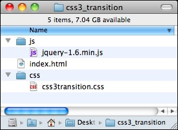
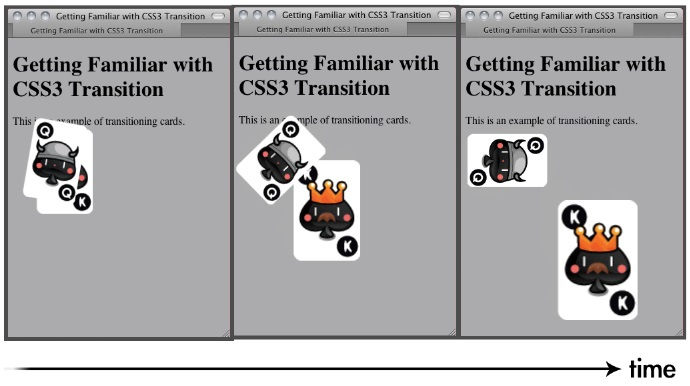
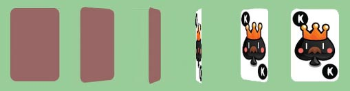

Section 3
Moving game objects with CSS3 transition
We had a glimpse of the CSS3 transition module and transformation module in Chapter 1,
Introducing HTML5 Games, when we were overviewing the new CSS3 features. We often
want to animate the game objects by easing the properties. Transition is the CSS property
designed for this purpose. Imagine we have a playing card on the web page and want to
move it to another position in five seconds. We had to use JavaScript and setup timer and
write our own function to change the position every several milliseconds. By using the
transition property, we just need to specify the start and end styles and the duration.
The browser does all the easing and in-between animations, magically.
Let's take a look at some examples to understand it.
In this example, we will place two playing cards on the web page and transform them
to a different position, scale, and rotation. We will tween the transformation by setting
the transition:
1. Create a new folder with three files in the following hierarchy. The css3transition.
css and index.html is empty now and we will add the code later. The jquery-
1.6.min.js is the jQuery library that we have used in the previous chapter.

2. We are using two playing card graphic images in this example. The images
are available in the code bundle or you can download them from http://
gamedesign.cc/html5games/css3-basic-transition/images/AK.png
and http://gamedesign.cc/html5games/css3-basic-transition/
images/AQ.png.
3. Create a new folder named images and place the two card images inside.
4. The next thing is to code the HTML with two card DIV elements. We will apply
CSS transition style to these two cards elements when the page is loaded:
<!DOCTYPE html>
<html lang="en">
<head>
<meta charset="utf-8">
<title>Getting Familiar with CSS3 Transition</title>
<link rel="stylesheet" href="css/css3transition.css" />
</head>
<body>
<header>
<h1>Getting Familiar with CSS3 Transition</h1>
</header>
<section id="game">
<div id="cards">
<div id="card1" class="card cardAK"></div>
<div id="card2" class="card cardAQ"></div>
</div> <!-- #cards -->
</section> <!-- #game -->
<footer>
<p>This is an example of transitioning cards.</p>
</footer>
<script src="js/jquery-1.6.min.js"></script>
<script>
$(function(){
$("#card1").addClass("moveAndScale");
$("#card2").addClass("rotateRight");
});
</script>
</body>
</html>
5. It is time to define the visual styles of the playing cards via CSS. It contains basic CSS
2.1 properties and CSS3 new properties. The new CSS3 properties are highlighted:
body {
background: #aaa;
}
/* defines styles for each card */
.card {
width: 80px;
height: 120px;
margin: 20px;
background: #efefef;
position: absolute;
-webkit-transition: all 1s linear;
}
/* set the card to corresponding playing card graphics */
.cardAK {
background: url(../images/AK.png);
}
.cardAQ {
background: url(../images/AQ.png);
}
/* rotate the applied DOM element 90 degree */
.rotateRight {
-webkit-transform: rotate3d(0,0,1,90deg);
}
/* move and scale up the applied DOM element */
.moveAndScale {
-webkit-transform: translate3d(150px,150px,0) scale3d(1.5, 1.5,1);
}
6. Let's save all the files and open the index.html in the browser. The two cards
should animate as shown in the following screenshot:

Have a go hero
We have translated, scaled, and rotated the playing cards. How about we try changing
different values in the example? There are three axes in the rotate3d function. What will
happen if we rotate the other axis? Experiment with the code yourselves to get familiar with
the transform and transition modules.
Creating a card-flipping effect
Imagine now we are not just moving the playing card around, but we also want to flip the
card element, just like we flip a real playing card. By using the rotation transform
function, it is now possible to create the card-flipping effect.
We are going to start a new project and create a card-flipping effect when we click on the
playing card.:
1. Let's continue on our previous code example.
2. The card now contains two faces, a front face and a back face. Replace the following
code into the body tag in the HTML:
<section id="game">
<div id="cards">
<div class="card">
<div class="face front"></div>
<div class="face back cardAK"></div>
</div> <!-- .card -->
<div class="card">
<div class="face front"></div>
<div class="face back cardAQ"></div>
</div> <!-- .card -->
</div> <!-- #cards -->
</section> <!-- #game -->
<script src="js/jquery-1.6.min.js"></script>
3. Then change the CSS external link to the css3flip.css file:
<link rel="stylesheet" href="css/css3flip.css" />
4. Now let's add the styles to the css3flip.css:
#game {
background: #9c9;
padding: 5px;
}
/* Define the 3D perspective view and dimension of each card. */
.card {
-webkit-perspective: 600;
width: 80px;
height: 120px;
}
5. There are two faces on each card. We are going to rotate the face late. Therefore,
we define how the face transits by CSS3 transition property. We also hide the
back face visibility. We will look at the detail of this property later:
.face {
border-radius: 10px;
width: 100%;
height: 100%;
position: absolute;
-webkit-transition: all .3s;
-webkit-backface-visibility: hidden;
}
6. Now it is time to style each individual face. The front face has a higher z-index than
the back face:
.front {
background: #966;
z-index: 10;
}
.back {
background: #eaa;
-webkit-transform: rotate3d(0,1,0,-180deg);
z-index: 8;
}
7. When we flip the card, we rotate the front face to back and back face to front.
We also swap the z-index of the front and back face:
.card-flipped .front {
-webkit-transform: rotate3d(0,1,0,180deg);
z-index: 8;
}
.card-flipped .back {
-webkit-transform: rotate3d(0,1,0,0deg);
z-index: 10;
}
.cardAK {
background: url(../images/AK.png);
}
.cardAQ {
background: url(../images/AQ.png);
}
8. Next, we will add logic after loading the jQuery library to toggle the card-flipped
status when clicking on the card:
<script>
$(function(){
$("#cards").children().each(function(index) {
// listen the click event on each card DIV element.
$(this).click(function() {
// add the class "card-flipped".
// the browser will animate the styles between current state and card-flipped state.
$(this).toggleClass("card-flipped");
});
});
});
</script>
9. The styles and the scripts are now ready. Let's save all the files and preview it in our
web browser. Click the playing card to flip it over and click again to flip back.

What just happened?
We have created a card-flipping effect toggled by a mouse click. The example made use of
several CSS transforms properties and JavaScript for handling the mouse click event.
Toggling class with jQuery toggleClass function
We apply the class card-flipped to the card element when the mouse is clicked on the
card. On the second click, we want to remove the applied card-flipped style so the card flips
back again. This is called toggling a class style.
jQuery provides us with a handy function named toggleClass to add or remove classes
automatically, depending on whether the class is applied or not.
To use the function, we simply pass the classes that we want to toggle as an argument.
For example, the following code adds or removes the card-flipped class to an element
with ID card1:
$("#card1").toggleClass("card-flipped");
The toggleClass function accepts toggle from more than one class at the sample time.
We can pass in several class names and separate them by using space. Here is an example
of toggling two classes at the same time:
$("#card1").toggleClass("card-flipped scale-up");
Controlling the visibility of overlapped elements by z-index
Normally, all elements in a web page are distributed and presented without overlapping.
Designing a game is a different story. We always need to deal with overlapped elements and
hide them (or part of them) on purpose. Z-index, a CSS 2.1 property, helps us to control the
visibility behaviors when more than one element is overlapped.
In this example, we have two faces for each card, the front and the back face. The two faces
are placed in the exact position. They overlap each other. The Z-index property defines which
element is on top and which is behind. The elements with a higher z-index go in front of
elements with a lower z-index. When they overlap, the one with the higher z-index will cover
the one with the lower z-index. The following screenshot demonstrates the z-index behavior:

.front {
z-index: 10;
}
.back {
z-index: 8;
}
While in a flipped state, the front face changes to a lower z-index than the back face.
The back face now covers the front face:
.card-flipped .front {
z-index: 8;
}
.card-flipped .back {
z-index: 10;
}
Introducing CSS perspective property
CSS3 lets us present elements in 3D. We have been able to transform the elements in 3D
space. The perspective property defines how the 3D perspective view looks. You can treat
the value as far as you are looking at the object. The closer you are, the more perspective
distortion there is on the viewing object.
The following two 3D cubes demonstrate how different perspective values change the
perspective view of the element:

You can view this experiment by going to the following address in Safari:
http://gamedesign.cc/html5games/perspective-cube/
Have a go hero
The cube is created by putting six faces together with 3D transforms applied to each face.
It used the techniques we've discussed. Try to create a cube and experiment with the
perspective property.
The following web page gives a comprehensive explanation on creating the CSS3 cube, and
also discusses controlling the rotation of the cube through the keyboard:
http://www.paulrhayes.com/2009-07/animated-css3-cube-interface-using-
3d-transforms/
Introducing backface-visibility
Before the backface-visibility is introduced, all elements on the page present their front face
to the visitor. Actually, there was no concept of the front face or back face of the element
because it was the only choice. While CSS3 introduces the rotation in three axes, we can
rotate an element so that its face is on the back. Try looking at your palm and rotating your
wrist, your palm turns and you see the back of your palm. This happens to the rotated
elements too.
CSS3 introduces a property named backface-visibility to define whether we can
see the back face of the element or not. By default, it is visible. The following screenshots
demonstrate the two different behaviors of the backface-visibility property.

Creating a card matching memory game
We have gong through some CSS basic techniques. Let's make a game with the techniques.
We are going to make a card game. The card game makes use of transform to flip the card,
transition to move the card, JavaScript to hold the logic, and a new HTML5 feature called
custom data attribute. Don't worry, we will discuss each component step by step.
Downloading the sprites sheet of playing cards
In the card-flipping example, we were using two different playing card graphics. Now we
prepare the whole deck of playing card graphics. Although we only use six playing cards in
the matching game, we prepare the whole deck so we can reuse these graphics in other
playing card games that we may create.
There are 52 playing cards in a deck and we have one more graphic for the backside. Instead
of using 53 separated files, it is good practice to put separated graphics into one big sprite
sheet file. The term sprite sheet was from an old computer graphics technique that loaded
one graphics texture into memory and displayed part of the graphics.
One benefit of using a big sprite sheet instead of separated image files is that we can
reduce the amount of HTTP requests. When the browser loads the web page, it creates a
new HTTP request to load each external resource, including JavaScript files, CSS files, and
images. It takes quite a lot of time to establish a new HTTP request for each separated small
file. Combining the graphics into one file, largely reduces the amount of requests and thus
improves the responsiveness of the game when loading in the browser.
Another benefit for placing graphics into one file is to avoid the overhead of the file format
header. The size of a 53 images sprite sheet is less than the sum of 53 different images with
the file header in each file.
The following deck of playing cards graphics is drawn and aligned in Adobe Illustrator. You
can download it from http://gamedesign.cc/html5games/css3-matching-game/
images/deck.png.
Setting up the game environment
The graphics are ready, we will then need to set up a static page with the game objects
prepared and placed on the game area. It is easier for adding game logic and interaction later:
Before adding the complicated game logic to our matching game, let's prepare the HTML
game structure and prepare all the CSS styles:
1. Let's continue on our code. Replace the index.html file with the following HTML:
<!DOCTYPE html>
<html lang=en>
<head>
<meta charset=utf-8>
<title>CSS3 Matching Game</title>
<link rel="stylesheet" href="css/matchgame.css" />
</head>
<body>
<header>
<h1>CSS3 Matching Game</h1>
</header>
<section id="game">
<div id="cards">
<div class="card">
<div class="face front"></div>
<div class="face back"></div>
</div> <!-- .card -->
</div> <!-- #cards -->
</section> <!-- #game -->
<footer>
<p>This is an example of creating a matching game with CSS3.</p>
</footer>
<script src="js/jquery-1.6.min.js"></script>
<script src="js/html5games.matchgame.js"></script>
</body>
</html>
2. In order to make the game more appealing, I prepared background images for the
game table and the page. These graphic assets can be found in the code example
bundle. The background images are optional and they will not affect the gameplay
and the logic of the matching game.
3. We will also place the deck sprite sheet graphics into the images folder. Download
the deck.png file from http://gamedesign.cc/html5games/css3-
matching-game/images/deck.png and save it into the images folder.
4. Let's add style to the matching game before writing any logic. Open matchgame.
css and add the following body styles:
body {
text-align: center;
background: #a46740 url(../images/bg.jpg);
}
5. Continue to add the styles to the game element. It will be the main area
of the game:
#game {
border-radius: 10px;
border: 1px solid #666;
background: #232 url(../images/table.jpg);
width: 500px;
height: 460px;
margin: 0 auto;
display: box;
box-pack: center;
box-align: center;
}
6. We will put all card elements into a parent DOM named cards. By doing this, we
can easily center all cards to the game area:
#cards {
position: relative;
width: 380px;
height: 400px;
}
7. For each card, we define a perspective property to give it a visual depth effect:
.card {
-webkit-perspective: 600;
width: 80px;
height: 120px;
position: absolute;
-moz-transition: all .3s;
-webkit-transition: all .3s;
transition: all .3s;
}
8. There are two faces on each card. The face will be rotated later and we will define
the transition properties to animate the style changes. We also want to make sure
the back face is hidden:
.face {
border-radius: 10px;
width: 100%;
height: 100%;
position: absolute;
-webkit-transition-property: opacity, transform, box-shadow;
-webkit-transition-duration: .3s;
-webkit-backface-visibility: hidden;
}
9. Then we set the front and back face styles. They are almost the same as the
flipping card example, except that we are now giving them background images
and box shadows:
.front {
background: #999 url(../images/deck.png) 0 -480px;
z-index: 10;
}
.back {
background: #efefef url(../images/deck.png);
-webkit-transform: rotate3d(0,1,0,-180deg);
z-index: 8;
}
.card:hover .face, .card-flipped .face {
-webkit-box-shadow: 0 0 10px #aaa;
}
.card-flipped .front {
-webkit-transform: rotate3d(0,1,0,180deg);
z-index: 8;
}
.card-flipped .back {
-webkit-transform: rotate3d(0,1,0,0deg);
z-index: 10;
}
10. When any card is removed, we want to fade it out. Therefore, we declare a
card-removed class with 0 opacity:
.card-removed {
opacity: 0;
}
11. In order to show different playing card graphics from the sprite sheet of the card
deck, we clip the background of the card into different background positions:
.cardAQ {background-position: -880px 0;}
.cardAK {background-position: -960px 0;}
.cardBQ {background-position: -880px -120px;}
.cardBK {background-position: -960px -120px;}
.cardCQ {background-position: -880px -240px;}
.cardCK {background-position: -960px -240px;}
.cardDQ {background-position: -880px -360px;}
.cardDK {background-position: -960px -360px;}
12. We have defined a lot of CSS styles. It is now time for the JavaScript logic.
Open the html5games.matchgame.js file and put the following code inside:
$(function(){
// clone 12 copies of the card
for(var i=0;i<11;i++){
$(".card:first-child").clone().appendTo("#cards");
}
// initialize each card's position
$("#cards").children().each(function(index) {
// align the cards to be 4x3 ourselves.
$(this).css({
"left" : ($(this).width() + 20) * (index % 4),
"top" : ($(this).height() + 20) * Math.floor(index / 4)
});
});
});
13. Now save all files and preview the game in the browser. The game should be well
styled and 12 cards should appear in the center. However, we cannot click on the
cards yet because we have not set any interaction logic to the cards.